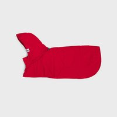
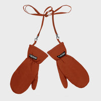
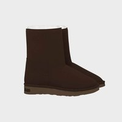
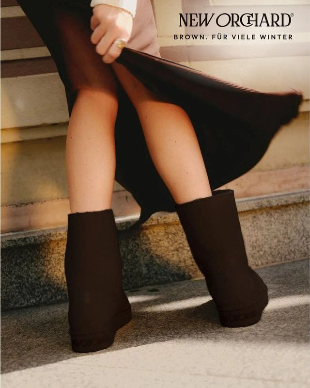
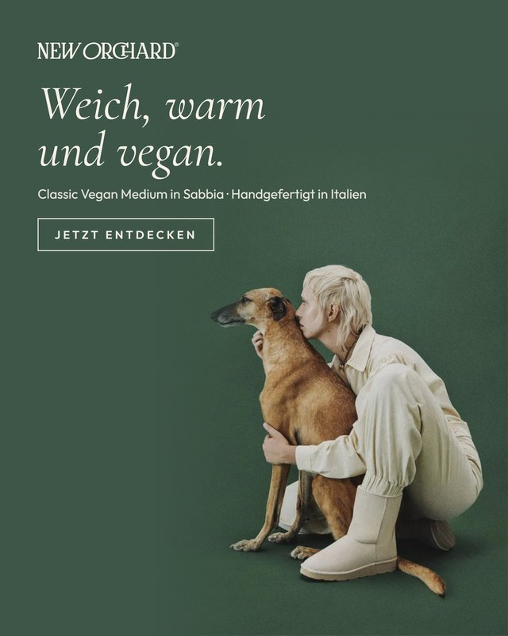
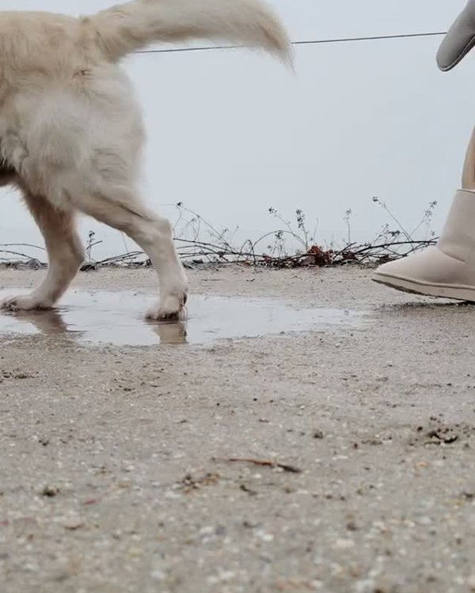
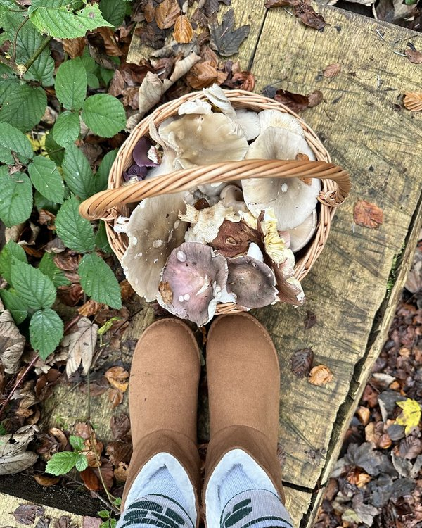
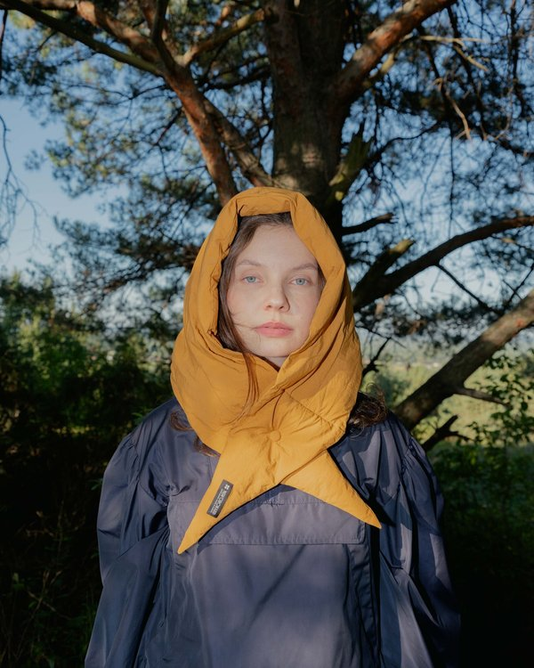
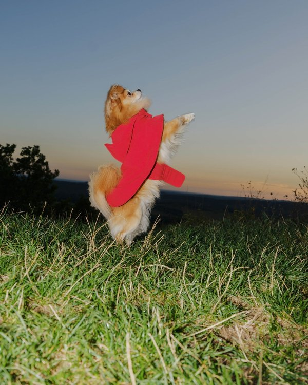
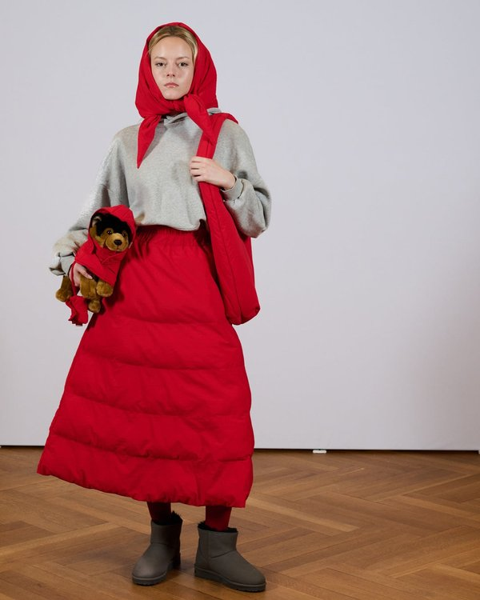

Zakup listopad DE · D3 koszyki, 1 kasa
119 kliknięć · 37 €
Pierwszy tydzień po urodzinach. Sklep internetowy nie sprzedał nic, wszystkie 5 zamówień (506 €) przyszło z marketplace'ów. Po odjęciu dwóch zwrotów z wcześniejszych zamówień zostaje 221 €, rok temu w tym tygodniu było 1 416 €. Reklama Meta: 123 €, ruch i koszyki są, zakupu brak. W tym tygodniu przygotowaliśmy Green Week, newsletter CH, test 3 grup odbiorców, losowanie biletów Blickfang i jutrzejszy mail VegNews.
Ten sam tydzień w 2025 (3–9.11) kontra teraz. Sprzedaż: wszystkie zamówienia w Shopify (sklep + marketplace'y) po zwrotach, reklama według Meta.
Wszystkie zamówienia w Shopify (sklep internetowy + marketplace'y), ten rok i rok temu, po zwrotach.
| Tydzień | 2026 | 2025, ten sam tydzień | Zmiana |
|---|---|---|---|
| Poprzedni 26.10–1.11 urodziny −40 % | 2 751 € 17 zam. | 2 861 € 16 zam. | −4 % |
| Ten 2–8.11 stan na niedzielę rano | 221 € 5 zam. · 506 € przed zwrotami | 1 416 € 12 zam. | −84 % |
| Przyszły 9–15.11 mail VegNews 9.11 | – | 400 € 4 zam. | cel |
Po urodzinach sprzedaż stanęła, a rok temu tydzień po urodzinach był jeszcze dobry. Zwroty w tym tygodniu: Short Black z early access (153 €) i zamówienie z września (131 €).
Sezon to wrzesień–styczeń. Wszystkie zamówienia w Shopify (sklep + marketplace'y).
| Miesiąc | Sezon 2026/27 | Sezon 2025/26 | Zmiana |
|---|---|---|---|
| Wrzesień | 3 912 € 14 zam. | 1 427 € 7 zam. | ×2,7 |
| Październik | 7 746 € 40 zam. | 2 109 € | ×3,7 |
| Listopad do 8.11 | 726 € 8 zam. | 12 123 € do 9.11: 3 802 €, 24 zam. | −81 % |
| Grudzień | – | 6 984 € 54 zam. | |
| Styczeń | – | 6 970 € 47 zam. | |
| Razem | 12 384 € 62 zam. | 29 613 € do 9.11: 7 338 €, 46 zam. | ×1,7 |
Sezon do dziś jest o 69 % lepszy niż rok temu, ale przewaga szybko topnieje: listopad 2025 dał 12 123 €, w tym 5 560 € w tygodniu Green Week.
Ostatnie 7 tygodni: wartość wszystkich zamówień złożonych w danym tygodniu (Shopify: sklep + marketplace'y), bez odejmowania późniejszych zwrotów.
Wszystkie 5 zamówień tygodnia, każde z marketplace'u. Jedna para butów (SLYGAD), dwie pary rękawiczek i czapka (Avocadostore), bluza dla psa (Syncee).

Bluza dla psa Red (S) Rękawiczki Red
Rękawiczki Red
Rękawiczki Cinnamon
Medium Brown z białym futerkiem (39) Czapka Black
Czapka BlackWnioski: marketplace'y sprzedają same, bez reklamy (na Avocadostore rękawiczki idą trzeci tydzień z rzędu). Sklep internetowy od 2.11 nie ma ani jednego zamówienia, a prawdziwych wizyt z DE, AT i CH jest 2,4 raza mniej niż rok temu.
Dzień po dniu, w skrócie.
Od 3.11 kampania „Zakup listopad” CH+DE, od 6.11 zamiast niej test trzech grup w DE+AT (po 7 € dziennie na grupę). WIN TICKETS działało tylko 2.11.
| Kampania | Wydane | Kliknięcia | Koszyki | Koszt koszyka |
|---|---|---|---|---|
| Meta · Zakup listopad CH+DE (3–5.11) | 60 € | 137 | 3 · 1 kasa | 20 € |
| Meta · test: fanki UGG (DE+AT) najwięcej koszyków | 17 € | 32 | 3 | 6 € |
| Meta · test: kobiety 35–54 (DE+AT) | 15 € | 32 | 1 | 15 € |
| Meta · test: podobni do klientów (DE+AT) | 15 € | 38 | 0 | – |
| Meta · WIN TICKETS Blickfang (2.11) | 15 € | 2 | 0 | – |
| 0 € | – | – | – |
Razem 123 €, 241 kliknięć, 10 koszyków (3 z nich to jeszcze kliknięcia z urodzin), 1 rozpoczęta płatność, 0 zakupów. Koszyk kosztuje 12 € (rok temu w tym tygodniu 53 €), ale nikt nie kończy zakupu. Test grup trwa dopiero 3 dni, grupę wybierzemy po tygodniu.



7 publikacji w tygodniu: 5 postów i 2 rolki. Razem 1 298 osób zasięgu i 111 polubień. Konto dotarło do 5 316 osób (razem z reklamą), 271 wizyt profilu i 36 kliknięć w link. Stories: −10 % za newsletter, VegNews, czapka, zwycięzcy losowania, ZFW.





Najlepsza znowu rolka (354 osoby). Post ZFW jest z soboty i jeszcze zbiera zasięg.
Jedna wysyłka: newsletter do Szwajcarii 5.11. Pełna baza nie dostała maila od 30.10, następny idzie jutro rano (VegNews + 4 pary, w tym Medium Caramel −25 %).
| Wysłane | Otwarte | Kliknięte | Zamówienia | |
|---|---|---|---|---|
| Newsletter CH EN · 5.11 (Glore + Blickfang) | 175 | 57 % | 4 | 0 |
| Newsletter CH DE · 5.11 | 4 | 75 % | 0 | 0 |
| Porzucony koszyk (automat) | 14 | 93 % | 3 | 0 |
| Powitanie (automat) | 14 | 50 % | 1 | 0 |
| Powroty po 11 miesiącach (automat) | 12 | 33 % | 1 | 0 |
| Podziękowanie, porzucona kasa, powroty po 1–2 mies. (automaty) | 13 | 46 % | 2 | 0 |
Newsletter CH był dobrze czytany (57 %), ale prawie nikt nie kliknął: to był mail o wydarzeniach (Glore, Blickfang), nie o butach. Maile w tym tygodniu nie dały zamówienia.
Sprzedaż tydzień po tygodniu w sezonie 2025 (wszystkie zamówienia w Shopify). Urodziny i Green Week to dwa najlepsze momenty sezonu.
Kreacje EN+DE są gotowe (także z pudlem), czekamy na Twoje sprawdzenie DE i decyzję o 10 % dla Tierschutz Aktiv Grenzenlos. Rok temu Green Week dał 5 560 € w tydzień przy 410 € reklamy. Proponujemy przeznaczyć na Green Week większą część budżetu, który został (1 390 €).
W tygodniu było 33 dodań do koszyka i nikt nie kupił. Proponujemy 3–5 € dziennie na osoby, które były na stronie lub dodały coś do koszyka, z Medium Caramel z outletu (194,25 € zamiast 259 €).
Po 3 dniach najtańsze koszyki dają fanki UGG (3 koszyki), podobni do klientów jeszcze żadnego. 13.11 zostawiamy najlepszą grupę i przenosimy na nią budżet.
Jutro o 8:00 mail VegNews + 4 pary do całej bazy bez CH. Następny mail (outlet) proponujemy po 7 dniach, około 16.11, potem Green Week.
Meta pobiera co 2 dni małe kwoty. Zmienimy to w ustawieniach płatności, jak tylko włączymy weryfikację dwuetapową na naszym koncie, albo możesz zmienić to Ty.
Cała sprzedaż tygodnia (506 €) przyszła z marketplace'ów. Na Avocadostore ceny są dobre (Sabbia 259 €, Caramel 194,25 €), tylko stare rozmiary 34/35 Caramel mają jeszcze 207,20 €. W&B i Swiss Impact sprawdzimy na początku tygodnia.
Dane: Meta Ads, Google Analytics, Shopify, Klaviyo, Instagram. Stan na 8.11.2026, 11:00 (aktualizacja wieczorem). Przygotowanie: ZOVU.